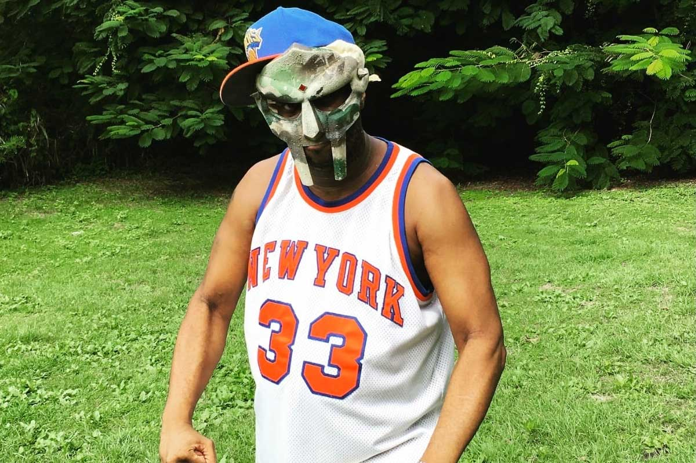

TRIBUTE TO DANIEL DUMILLE AKA MF DOOM

"The best MC with no chain ya ever heard"
TIMELINE
- 1999: Operation Doomsday, his debut album that set him as an underground figure
- 2003: Take Me to Your Leader, his album as King Geedorah
- 2004: Madvillainy, his collab album with legendary producer Madlib
- 2004: Mm..Food, his concept album produced entirely by himself